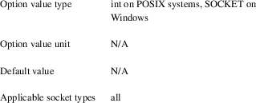

zmq_getsockopt − get 0MQ socket options
int zmq_getsockopt (void *socket, int option_name, void *option_value, size_t *option_len);
The zmq_getsockopt() function shall retrieve the value for the option specified by the option_name argument for the 0MQ socket pointed to by the socket argument, and store it in the buffer pointed to by the option_value argument. The option_len argument is the size in bytes of the buffer pointed to by option_value; upon successful completion zmq_getsockopt() shall modify the option_len argument to indicate the actual size of the option value stored in the buffer.
The following options can be retrieved with the zmq_getsockopt() function:
ZMQ_AFFINITY:
Retrieve I/O thread affinity
The ZMQ_AFFINITY option shall retrieve the I/O thread
affinity for newly created connections on the specified
socket.
Affinity determines which threads from the 0MQ I/O thread pool associated with the socket’s context shall handle newly created connections. A value of zero specifies no affinity, meaning that work shall be distributed fairly among all 0MQ I/O threads in the thread pool. For non−zero values, the lowest bit corresponds to thread 1, second lowest bit to thread 2 and so on. For example, a value of 3 specifies that subsequent connections on socket shall be handled exclusively by I/O threads 1 and 2.
See also zmq_init(3) for details on allocating the number of I/O threads for a specific context.
ZMQ_BACKLOG:
Retrieve maximum length of the queue of outstanding
connections
The ZMQ_BACKLOG option shall retrieve the maximum
length of the queue of outstanding peer connections for the
specified socket; this only applies to
connection−oriented transports. For details refer to
your operating system documentation for the listen
function.
ZMQ_BINDTODEVICE:
Retrieve name of device the socket is bound to
The ZMQ_BINDTODEVICE option retrieves the name of the
device this socket is bound to, eg. an interface or VRF. If
a socket is bound to an interface, only packets received
from that interface are processed by the socket. If device
is a VRF device, then subsequent binds/connects to that
socket use addresses in the VRF routing table.
ZMQ_CONNECT_TIMEOUT:
Retrieve connect() timeout
Retrieves how long to wait before timing−out a
connect() system call. The connect() system call normally
takes a long time before it returns a time out error.
Setting this option allows the library to time out the call
at an earlier interval.
ZMQ_CURVE_PUBLICKEY:
Retrieve current CURVE public key
Retrieves the current long term public key for the socket.
You can provide either a 32 byte buffer, to retrieve the
binary key value, or a 41 byte buffer, to retrieve the key
in a printable Z85 format. NOTE: to fetch a printable key,
the buffer must be 41 bytes large to hold the 40−char
key value and one null byte.
ZMQ_CURVE_SECRETKEY:
Retrieve current CURVE secret key
Retrieves the current long term secret key for the socket.
You can provide either a 32 byte buffer, to retrieve the
binary key value, or a 41 byte buffer, to retrieve the key
in a printable Z85 format. NOTE: to fetch a printable key,
the buffer must be 41 bytes large to hold the 40−char
key value and one null byte.
ZMQ_CURVE_SERVERKEY:
Retrieve current CURVE server key
Retrieves the current server key for the client socket. You
can provide either a 32 byte buffer, to retrieve the binary
key value, or a 41−byte buffer, to retrieve the key in
a printable Z85 format. NOTE: to fetch a printable key, the
buffer must be 41 bytes large to hold the 40−char key
value and one null byte.

ZMQ_EVENTS:
Retrieve socket event state
The ZMQ_EVENTS option shall retrieve the event state
for the specified socket. The returned value is a bit
mask constructed by OR’ing a combination of the
following event flags:
ZMQ_POLLIN
Indicates that at least one message may be received from the specified socket without blocking.
ZMQ_POLLOUT
Indicates that at least one message may be sent to the specified socket without blocking.
The combination of a file descriptor returned by the ZMQ_FD option being ready for reading but no actual events returned by a subsequent retrieval of the ZMQ_EVENTS option is valid; applications should simply ignore this case and restart their polling operation/event loop.
ZMQ_FD:
Retrieve file descriptor associated with the socket
The ZMQ_FD option shall retrieve the file descriptor
associated with the specified socket. The returned
file descriptor can be used to integrate the socket into an
existing event loop; the 0MQ library shall signal any
pending events on the socket in an
edge−triggered fashion by making the file
descriptor become ready for reading.
Note
The ability to read from the returned file descriptor does
not necessarily indicate that messages are available to be
read from, or can be written to, the underlying socket;
applications must retrieve the actual event state with a
subsequent retrieval of the ZMQ_EVENTS option.
Note
The returned file descriptor is also used internally by the
zmq_send and zmq_recv functions. As the
descriptor is edge triggered, applications must update the
state of ZMQ_EVENTS after each invocation of
zmq_send or zmq_recv.To be more explicit:
after calling zmq_send the socket may become readable
(and vice versa) without triggering a read event on the file
descriptor.
Caution
The returned file descriptor is intended for use with a
poll or similar system call only. Applications must
never attempt to read or write data to it directly, neither
should they try to close it.

ZMQ_GSSAPI_PLAINTEXT:
Retrieve GSSAPI plaintext or encrypted status
Returns the ZMQ_GSSAPI_PLAINTEXT option, if any,
previously set on the socket. A value of 1 means that
communications will be plaintext. A value of 0 means
communications will be encrypted.
ZMQ_GSSAPI_PRINCIPAL:
Retrieve the name of the GSSAPI principal
The ZMQ_GSSAPI_PRINCIPAL option shall retrieve the
principal name set for the GSSAPI security mechanism. The
returned value shall be a NULL−terminated string and
MAY be empty. The returned size SHALL include the
terminating null byte.

ZMQ_GSSAPI_SERVER:
Retrieve current GSSAPI server role
Returns the ZMQ_GSSAPI_SERVER option, if any,
previously set on the socket.

ZMQ_GSSAPI_SERVICE_PRINCIPAL:
Retrieve the name of the GSSAPI service principal
The ZMQ_GSSAPI_SERVICE_PRINCIPAL option shall
retrieve the principal name of the GSSAPI server to which a
GSSAPI client socket intends to connect. The returned value
shall be a NULL−terminated string and MAY be empty.
The returned size SHALL include the terminating null
byte.
ZMQ_GSSAPI_SERVICE_PRINCIPAL_NAMETYPE:
Retrieve nametype for service principal
Returns the ZMQ_GSSAPI_SERVICE_PRINCIPAL_NAMETYPE
option, if any, previously set on the socket. A value of
ZMQ_GSSAPI_NT_HOSTBASED (0) means the name specified
with ZMQ_GSSAPI_SERVICE_PRINCIPAL is interpreted as a
host based name. A value of ZMQ_GSSAPI_NT_USER_NAME
(1) means it is interpreted as a local user name. A value of
ZMQ_GSSAPI_NT_KRB5_PRINCIPAL (2) means it is
interpreted as an unparsed principal name string (valid only
with the krb5 GSSAPI mechanism).
ZMQ_GSSAPI_PRINCIPAL_NAMETYPE:
Retrieve nametype for service principal
Returns the ZMQ_GSSAPI_PRINCIPAL_NAMETYPE option, if
any, previously set on the socket. A value of
ZMQ_GSSAPI_NT_HOSTBASED (0) means the name specified
with ZMQ_GSSAPI_PRINCIPAL is interpreted as a host
based name. A value of ZMQ_GSSAPI_NT_USER_NAME (1)
means it is interpreted as a local user name. A value of
ZMQ_GSSAPI_NT_KRB5_PRINCIPAL (2) means it is
interpreted as an unparsed principal name string (valid only
with the krb5 GSSAPI mechanism).
ZMQ_HANDSHAKE_IVL:
Retrieve maximum handshake interval
The ZMQ_HANDSHAKE_IVL option shall retrieve the
maximum handshake interval for the specified socket.
Handshaking is the exchange of socket configuration
information (socket type, routing id, security) that occurs
when a connection is first opened, only for
connection−oriented transports. If handshaking does
not complete within the configured time, the connection
shall be closed. The value 0 means no handshake time
limit.
ZMQ_IDENTITY:
Retrieve socket identity
This option name is now deprecated. Use ZMQ_ROUTING_ID
instead. ZMQ_IDENTITY remains as an alias for now.
ZMQ_IMMEDIATE:
Retrieve attach−on−connect value
Retrieve the state of the attach on connect value. If set to
1, will delay the attachment of a pipe on connect until the
underlying connection has completed. This will cause the
socket to block if there are no other connections, but will
prevent queues from filling on pipes awaiting
connection.
ZMQ_INVERT_MATCHING:
Retrieve inverted filtering status
Returns the value of the ZMQ_INVERT_MATCHING option.
A value of 1 means the socket uses inverted prefix
matching.
On PUB and XPUB sockets, this causes messages to be sent to all connected sockets except those subscribed to a prefix that matches the message. On SUB sockets, this causes only incoming messages that do not match any of the socket’s subscriptions to be received by the user.
Whenever ZMQ_INVERT_MATCHING is set to 1 on a PUB socket, all SUB sockets connecting to it must also have the option set to 1. Failure to do so will have the SUB sockets reject everything the PUB socket sends them. XSUB sockets do not need to do this because they do not filter incoming messages.
ZMQ_IPV4ONLY:
Retrieve IPv4−only socket override status
Retrieve the IPv4−only option for the socket. This
option is deprecated. Please use the ZMQ_IPV6
option.
ZMQ_IPV6:
Retrieve IPv6 socket status
Retrieve the IPv6 option for the socket. A value of 1 means
IPv6 is enabled on the socket, while 0 means the socket will
use only IPv4. When IPv6 is enabled the socket will connect
to, or accept connections from, both IPv4 and IPv6
hosts.

ZMQ_LAST_ENDPOINT:
Retrieve the last endpoint set
The ZMQ_LAST_ENDPOINT option shall retrieve the last
endpoint bound for TCP and IPC transports. The returned
value will be a string in the form of a ZMQ DSN. Note that
if the TCP host is INADDR_ANY, indicated by a *, then the
returned address will be 0.0.0.0 (for IPv4). Note: not
supported on GNU/Hurd with IPC due to non−working
getsockname().
ZMQ_LINGER:
Retrieve linger period for socket shutdown
The ZMQ_LINGER option shall retrieve the linger
period for the specified socket. The linger period
determines how long pending messages which have yet to be
sent to a peer shall linger in memory after a socket is
closed with zmq_close(3), and further affects the
termination of the socket’s context with
zmq_ctx_term(3). The following outlines the different
behaviours:
• The default value of −1 specifies an infinite linger period. Pending messages shall not be discarded after a call to zmq_close(); attempting to terminate the socket’s context with zmq_ctx_term() shall block until all pending messages have been sent to a peer.
• The value of 0 specifies no linger period. Pending messages shall be discarded immediately when the socket is closed with zmq_close().
• Positive values specify an upper bound for the linger period in milliseconds. Pending messages shall not be discarded after a call to zmq_close(); attempting to terminate the socket’s context with zmq_ctx_term() shall block until either all pending messages have been sent to a peer, or the linger period expires, after which any pending messages shall be discarded.
ZMQ_MAXMSGSIZE:
Maximum acceptable inbound message size
The option shall retrieve limit for the inbound messages. If
a peer sends a message larger than ZMQ_MAXMSGSIZE it is
disconnected. Value of −1 means no
limit.
ZMQ_MECHANISM:
Retrieve current security mechanism
The ZMQ_MECHANISM option shall retrieve the current
security mechanism for the socket.
ZMQ_MULTICAST_HOPS:
Maximum network hops for multicast packets
The option shall retrieve time−to−live used for
outbound multicast packets. The default of 1 means that the
multicast packets don’t leave the local
network.
ZMQ_MULTICAST_MAXTPDU:
Maximum transport data unit size for multicast packets
The ZMQ_MULTICAST_MAXTPDU option shall retrieve the
maximum transport data unit size used for outbound multicast
packets.
This must be set at or below the minimum Maximum Transmission Unit (MTU) for all network paths over which multicast reception is required.
ZMQ_PLAIN_PASSWORD:
Retrieve current password
The ZMQ_PLAIN_PASSWORD option shall retrieve the last
password set for the PLAIN security mechanism. The returned
value shall be a NULL−terminated string and MAY be
empty. The returned size SHALL include the terminating null
byte.
ZMQ_PLAIN_SERVER:
Retrieve current PLAIN server role
Returns the ZMQ_PLAIN_SERVER option, if any,
previously set on the socket.
ZMQ_PLAIN_USERNAME:
Retrieve current PLAIN username
The ZMQ_PLAIN_USERNAME option shall retrieve the last
username set for the PLAIN security mechanism. The returned
value shall be a NULL−terminated string and MAY be
empty. The returned size SHALL include the terminating null
byte.

ZMQ_USE_FD:
Retrieve the pre−allocated socket file descriptor
The ZMQ_USE_FD option shall retrieve the
pre−allocated file descriptor that has been assigned
to a ZMQ socket, if any. −1 shall be returned if a
pre−allocated file descriptor was not set for the
socket.
ZMQ_PRIORITY: Retrieve the Priority on socket
Gets the
protocol−defined priority for all packets to be sent
on this
socket, where supported by the OS.
[horizontal]
Option value type:: int
Option value unit:: >0
Default value:: 0
Applicable socket types:: all, only for
connection−oriented transports
ZMQ_RATE: Retrieve multicast data rate
The ZMQ_RATE option shall retrieve the maximum send or receive data rate for multicast transports using the specified socket.
ZMQ_RCVBUF:
Retrieve kernel receive buffer size
The ZMQ_RCVBUF option shall retrieve the underlying
kernel receive buffer size for the specified socket.
For details refer to your operating system documentation for
the SO_RCVBUF socket option.

ZMQ_RCVHWM:
Retrieve high water mark for inbound messages
The ZMQ_RCVHWM option shall return the high water
mark for inbound messages on the specified socket.
The high water mark is a hard limit on the maximum number of
outstanding messages 0MQ shall queue in memory for any
single peer that the specified socket is
communicating with. A value of zero means no
limit.
If this limit has been reached the socket shall enter an exceptional state and depending on the socket type, 0MQ shall take appropriate action such as blocking or dropping sent messages. Refer to the individual socket descriptions in zmq_socket(3) for details on the exact action taken for each socket type.
ZMQ_RCVMORE:
More message data parts to follow
The ZMQ_RCVMORE option shall return True (1) if the
message part last received from the socket was a data
part with more parts to follow. If there are no data parts
to follow, this option shall return False (0).
Refer to zmq_send(3) and zmq_recv(3) for a detailed description of multi−part messages.
ZMQ_RCVTIMEO:
Maximum time before a socket operation returns with
EAGAIN
Retrieve the timeout for recv operation on the socket. If
the value is 0, zmq_recv(3) will return immediately,
with a EAGAIN error if there is no message to receive. If
the value is −1, it will block until a message is
available. For all other values, it will wait for a message
for that amount of time before returning with an EAGAIN
error.
ZMQ_RECONNECT_IVL:
Retrieve reconnection interval
The ZMQ_RECONNECT_IVL option shall retrieve the
initial reconnection interval for the specified
socket. The reconnection interval is the period 0MQ
shall wait between attempts to reconnect disconnected peers
when using connection−oriented transports. The value
−1 means no reconnection.
Note
The reconnection interval may be randomized by 0MQ to
prevent reconnection storms in topologies with a large
number of peers per socket.
ZMQ_RECONNECT_IVL_MAX:
Retrieve maximum reconnection interval
The ZMQ_RECONNECT_IVL_MAX option shall retrieve the
maximum reconnection interval for the specified
socket. This is the maximum period 0MQ shall wait
between attempts to reconnect. On each reconnect attempt,
the previous interval shall be doubled untill
ZMQ_RECONNECT_IVL_MAX is reached. This allows for
exponential backoff strategy. Default value means no
exponential backoff is performed and reconnect interval
calculations are only based on
ZMQ_RECONNECT_IVL.
Note
Values less than ZMQ_RECONNECT_IVL will be
ignored.
ZMQ_RECONNECT_STOP:
Retrieve condition where reconnection will stop
The ZMQ_RECONNECT_STOP option shall retrieve the
conditions under which automatic reconnection will
stop.
The ZMQ_RECONNECT_STOP_CONN_REFUSED option will stop reconnection when 0MQ receives the ECONNREFUSED return code from the connect. This indicates that there is no code bound to the specified endpoint.
ZMQ_RECOVERY_IVL:
Get multicast recovery interval
The ZMQ_RECOVERY_IVL option shall retrieve the
recovery interval for multicast transports using the
specified socket. The recovery interval determines
the maximum time in milliseconds that a receiver can be
absent from a multicast group before unrecoverable data loss
will occur.
ZMQ_ROUTING_ID:
Retrieve socket routing id
The ZMQ_ROUTING_ID option shall retrieve the routing
id of the specified socket. Routing ids are used only
by the request/reply pattern. Specifically, it can be used
in tandem with ROUTER socket to route messages to the peer
with a specific routing id.
A routing id must be at least one byte and at most 255 bytes long. Identities starting with a zero byte are reserved for use by the 0MQ infrastructure.
ZMQ_SNDBUF:
Retrieve kernel transmit buffer size
The ZMQ_SNDBUF option shall retrieve the underlying
kernel transmit buffer size for the specified socket.
For details refer to your operating system documentation for
the SO_SNDBUF socket option.
ZMQ_SNDHWM:
Retrieves high water mark for outbound messages
The ZMQ_SNDHWM option shall return the high water
mark for outbound messages on the specified socket.
The high water mark is a hard limit on the maximum number of
outstanding messages 0MQ shall queue in memory for any
single peer that the specified socket is
communicating with. A value of zero means no
limit.
If this limit has been reached the socket shall enter an exceptional state and depending on the socket type, 0MQ shall take appropriate action such as blocking or dropping sent messages. Refer to the individual socket descriptions in zmq_socket(3) for details on the exact action taken for each socket type.
ZMQ_SNDTIMEO:
Maximum time before a socket operation returns with
EAGAIN
Retrieve the timeout for send operation on the socket. If
the value is 0, zmq_send(3) will return immediately,
with a EAGAIN error if the message cannot be sent. If the
value is −1, it will block until the message is sent.
For all other values, it will try to send the message for
that amount of time before returning with an EAGAIN
error.
ZMQ_SOCKS_PROXY:
Retrieve SOCKS5 proxy address
The ZMQ_SOCKS_PROXY option shall retrieve the SOCKS5
proxy address in string format. The returned value shall be
a NULL−terminated string and MAY be empty. The
returned size SHALL include the terminating null
byte.

ZMQ_TCP_KEEPALIVE:
Override SO_KEEPALIVE socket option
Override SO_KEEPALIVE socket option(where supported
by OS). The default value of −1 means to skip any
overrides and leave it to OS default.
ZMQ_TCP_KEEPALIVE_CNT:
Override TCP_KEEPCNT socket option
Override TCP_KEEPCNT socket option(where supported by
OS). The default value of −1 means to skip any
overrides and leave it to OS default.
ZMQ_TCP_KEEPALIVE_IDLE:
Override TCP_KEEPIDLE (or TCP_KEEPALIVE on some OS)
Override TCP_KEEPIDLE(or TCP_KEEPALIVE on some
OS) socket option (where supported by OS). The default value
of −1 means to skip any overrides and leave it to OS
default.

ZMQ_TCP_KEEPALIVE_INTVL:
Override TCP_KEEPINTVL socket option
Override TCP_KEEPINTVL socket option(where supported
by OS). The default value of −1 means to skip any
overrides and leave it to OS default.
ZMQ_TCP_MAXRT:
Retrieve Max TCP Retransmit Timeout
On OSes where it is supported, retrieves how long before an
unacknowledged TCP retransmit times out. The system normally
attempts many TCP retransmits following an exponential
backoff strategy. This means that after a network outage, it
may take a long time before the session can be
re−established. Setting this option allows the timeout
to happen at a shorter interval.
ZMQ_THREAD_SAFE:
Retrieve socket thread safety
The ZMQ_THREAD_SAFE option shall retrieve a boolean
value indicating whether or not the socket is threadsafe.
See zmq_socket(3) for which sockets are
thread−safe.
ZMQ_TOS:
Retrieve the Type−of−Service socket override
status
Retrieve the IP_TOS option for the
socket.
ZMQ_TYPE:
Retrieve socket type
The ZMQ_TYPE option shall retrieve the socket type
for the specified socket. The socket type is
specified at socket creation time and cannot be modified
afterwards.
ZMQ_ZAP_DOMAIN:
Retrieve RFC 27 authentication domain
The ZMQ_ZAP_DOMAIN option shall retrieve the last ZAP
domain set for the socket. The returned value shall be a
NULL−terminated string and MAY be empty. An empty
string means that ZAP authentication is disabled. The
returned size SHALL include the terminating null
byte.
ZMQ_ZAP_ENFORCE_DOMAIN:
Retrieve ZAP domain handling mode
The ZMQ_ZAP_ENFORCE_DOMAIN option shall retrieve the
flag that determines whether a ZAP domain is strictly
required or not.
ZMQ_VMCI_BUFFER_SIZE:
Retrieve buffer size of the VMCI socket
The ZMQ_VMCI_BUFFER_SIZE option shall retrieve the size of
the underlying buffer for the socket. Used during
negotiation before the connection is
established.
ZMQ_VMCI_BUFFER_MIN_SIZE:
Retrieve min buffer size of the VMCI socket
The ZMQ_VMCI_BUFFER_MIN_SIZE option shall retrieve the min
size of the underlying buffer for the socket. Used during
negotiation before the connection is
established.
ZMQ_VMCI_BUFFER_MAX_SIZE:
Retrieve max buffer size of the VMCI socket
The ZMQ_VMCI_BUFFER_MAX_SIZE option shall retrieve the max
size of the underlying buffer for the socket. Used during
negotiation before the connection is
established.

ZMQ_VMCI_CONNECT_TIMEOUT:
Retrieve connection timeout of the VMCI socket
The ZMQ_VMCI_CONNECT_TIMEOUT option shall retrieve
connection timeout for the socket.

ZMQ_MULTICAST_LOOP:
Retrieve multicast local loopback configuration
Retrieve the current multicast loopback configuration. A
value of 1 means that the multicast packets sent on this
socket will be looped back to local listening
interface.

ZMQ_ROUTER_NOTIFY:
Retrieve router socket notification settings
Retrieve the current notification settings of a router
socket. The returned value is a bitmask composed of
ZMQ_NOTIFY_CONNECT and ZMQ_NOTIFY_DISCONNECT flags, meaning
connect and disconnect notifications are enabled,
respectively. A value of 0 means the notifications
are off.
Note
in DRAFT state, not yet available in stable
releases.
ZMQ_IN_BATCH_SIZE:
Maximal receive batch size
Gets the maximal amount of messages that can be received in
a single recv system
call.
Cannot be zero.
Note
in DRAFT state, not yet available in stable
releases.
ZMQ_OUT_BATCH_SIZE:
Maximal send batch size
Gets the maximal amount of messages that can be sent in a
single send system
call.
Cannot be zero.
Note
in DRAFT state, not yet available in stable
releases.

The zmq_getsockopt() function shall return zero if successful. Otherwise it shall return −1 and set errno to one of the values defined below.
EINVAL
The requested option option_name is unknown, or the requested option_len or option_value is invalid, or the size of the buffer pointed to by option_value, as specified by option_len, is insufficient for storing the option value.
ETERM
The 0MQ context associated with the specified socket was terminated.
ENOTSOCK
The provided socket was invalid.
EINTR
The operation was interrupted by delivery of a signal.
Retrieving the high water mark for outgoing messages.
/*
Retrieve high water mark into sndhwm */
int sndhwm;
size_t sndhwm_size = sizeof (sndhwm);
rc = zmq_getsockopt (socket, ZMQ_SNDHWM, &sndhwm,
&sndhwm_size);
assert (rc == 0);
zmq_setsockopt(3) zmq_socket(3) zmq(7)
This page was written by the 0MQ community. To make a change please read the 0MQ Contribution Policy at http://www.zeromq.org/docs:contributing.